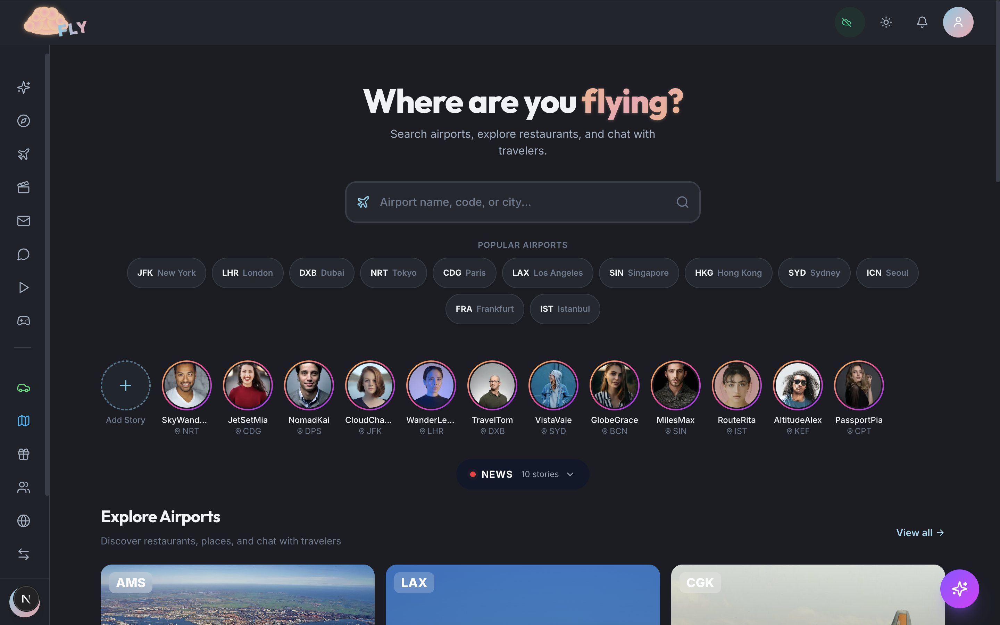
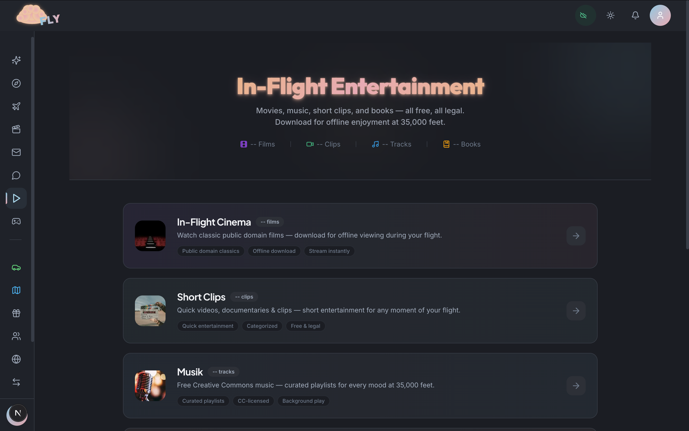
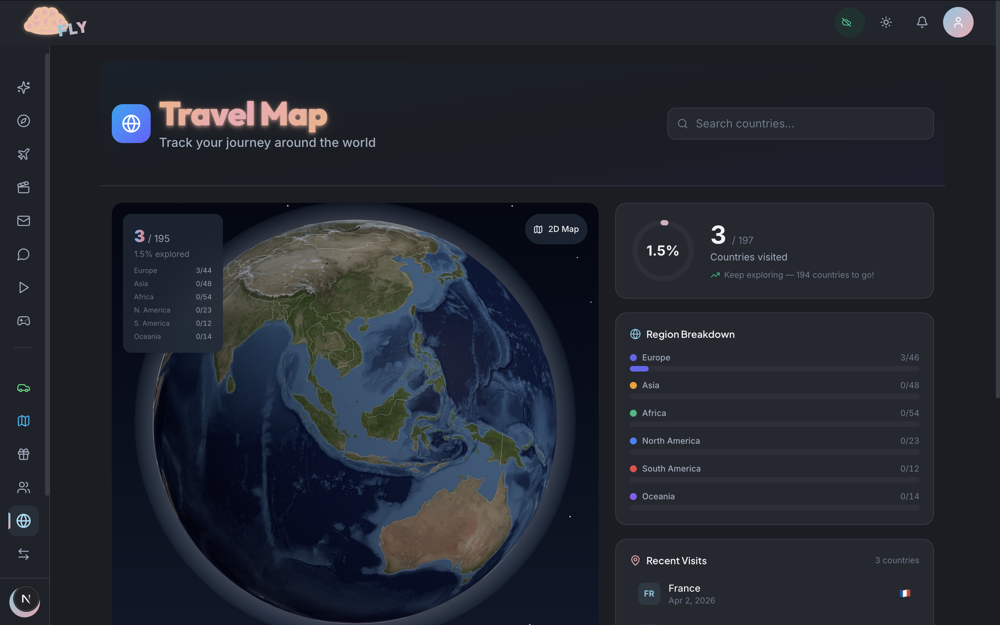
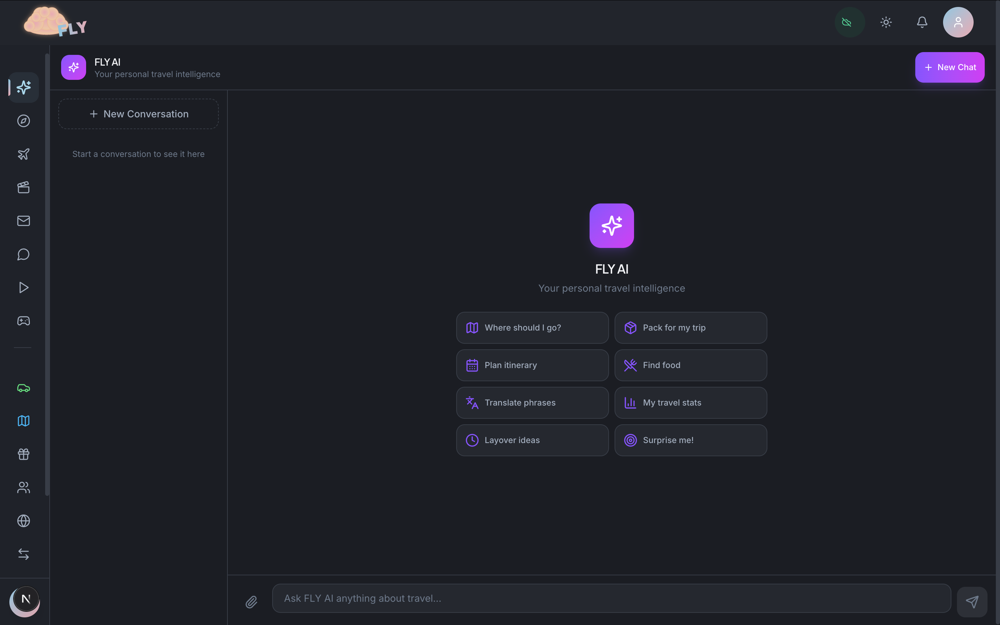

A full-stack travel super-app that combines social networking, airport intelligence, AI assistance, entertainment, marketplace, and real-time communication into one platform. 27 feature modules, 50+ database models, 35+ API routes — currently in active development.




In Development
Active personal project — architecture, modules, and data model continuously growing
Solo Developer
Full-stack, database architecture, AI integration, real-time systems, mobile PWA
Travel Super-App
Social + entertainment + marketplace + AI + airport intelligence — one platform
Both ChatMessage and Comment use self-referential Prisma relations — a message or comment can reply to another of the same type, creating trees of arbitrary depth. ChatMessage also has a composite index on [chatRoomId, createdAt] specifically for paginated room history queries. Getting these to work correctly with Prisma's include syntax without N+1 queries required careful eager loading at known nesting levels.
When a user sends a direct message, the message appears in the UI instantly — before the server confirms it. A temporary ID (temp-${Date.now()}) is used as a placeholder. On success, the confirmed server message seamlessly replaces the temp entry. On any failure, the optimistic message is atomically removed via filter. This eliminates the jarring "sent → disappeared" UX that comes from naive rollback approaches.
Airport restaurant and place data is enriched through a cascade: Unsplash first, then Google Places, then Wikipedia. Each source is tried in order — if one returns nothing, the next is queried automatically. This enrichment runs via standalone Node.js scripts (deep-image-enrich.mjs, enrich-tmdb.mjs, import-jamendo.mjs) that populate the database independently from the app. The result is a rich, offline-first data layer for airports that doesn't depend on live API calls during the user session.
Every bottom-fixed element — the input bar in DMs, the tab navigation, the media player — uses env(safe-area-inset-bottom) in its padding to avoid the iPhone home bar. Heights use 100dvh (dynamic viewport height) instead of 100vh to account for the browser chrome that appears and disappears on scroll. This must be applied consistently across all 27 modules — missing it in even one place causes visible content clipping on iOS.
The User model has two separate relations to the same Follow model — followers and following — using Prisma named relation syntax. The same pattern applies to DirectMessage (MessageSender / MessageReceiver). Without explicit relation names, Prisma cannot disambiguate which FK maps to which side. Getting the migration correct the first time required understanding how Prisma resolves ambiguous self-referential and bidirectional relations.
model User { role UserRole @default(TRAVELER) verificationStatus VerificationStatus @default(NONE) // Role-specific profiles — only one can be active driverProfile DriverProfile? guideProfile GuideProfile? // Bidirectional follow graph — two named relations to same model followers Follow[] @relation("UserFollowers") following Follow[] @relation("UserFollowing") // Bidirectional DMs — two named relations to DirectMessage sentMessages DirectMessage[] @relation("MessageSender") receivedMessages DirectMessage[] @relation("MessageReceiver") @@index([email]) @@index([username]) @@index([country]) @@map("users") } model ChatMessage { // Self-referential reply threading — unlimited depth replyToId String? @map("reply_to_id") replyTo ChatMessage? @relation("MessageReplies", fields: [replyToId], references: [id]) replies ChatMessage[] @relation("MessageReplies") // Composite index for paginated room history (critical for performance) @@index([chatRoomId, createdAt]) } model Comment { // Same self-referential pattern for post/memory comment trees parentId String? @map("parent_id") parent Comment? @relation("CommentReplies", fields: [parentId], references: [id]) replies Comment[] @relation("CommentReplies") }
const handleSend = async () => { const text = input.trim(); setInput(''); setSending(true); // Optimistic — message appears instantly before server confirms const optimisticMsg = { id: `temp-${Date.now()}`, senderId: session?.user?.id, content: text, createdAt: new Date().toISOString(), sender: { id: session?.user?.id, name: session?.user?.name }, }; setMessages((prev) => [...prev, optimisticMsg]); try { const res = await fetch('/api/messages', { method: 'POST', headers: { 'Content-Type': 'application/json' }, body: JSON.stringify({ receiverId: partnerId, content: text }), }); if (res.ok()) { const data = await res.json(); // Seamlessly swap temp message with confirmed server message setMessages((prev) => prev.map((m) => (m.id === optimisticMsg.id ? data.message : m)) ); } } catch { // Atomic rollback — temp message removed entirely on failure setMessages((prev) => prev.filter((m) => m.id !== optimisticMsg.id)); } finally { setSending(false); } };
// Scoped matcher — middleware only runs on routes that actually need auth // Public pages (airport explorer, news, entertainment browse) skip it entirely export { default } from 'next-auth/middleware'; export const config = { matcher: [ '/dashboard/:path*', '/trips/:path*', '/messages/:path*', '/profile/:path*', '/settings/:path*', ], };
services: web: build: context: . dockerfile: apps/web/Dockerfile depends_on: [postgres, redis] environment: - DATABASE_URL=${DATABASE_URL} - NEXTAUTH_SECRET=${NEXTAUTH_SECRET} nginx: image: nginx:alpine volumes: - ./nginx/nginx.conf:/etc/nginx/nginx.conf ports: - "80:80" - "443:443" depends_on: [web] postgres: image: postgres:15-alpine volumes: - postgres_data:/var/lib/postgresql/data
// Unsplash → Google Places → Wikipedia cascade // Each source tried in order; next queried only if previous returns nothing import { fetchUnsplashImage } from './lib/unsplash-images.mjs'; import { fetchGooglePlacesImage } from './lib/google-places-fetcher.mjs'; import { fetchWikipediaImage } from './lib/wikipedia-images.mjs'; async function enrichEntityImage(entity) { let result = await fetchUnsplashImage(entity.name, entity.city); if (!result) result = await fetchGooglePlacesImage(entity.name); if (!result) result = await fetchWikipediaImage(entity.name); return result; } // Runs as standalone script — enriches the database independently from the app // Same pattern used for TMDB movie metadata and Jamendo music track import